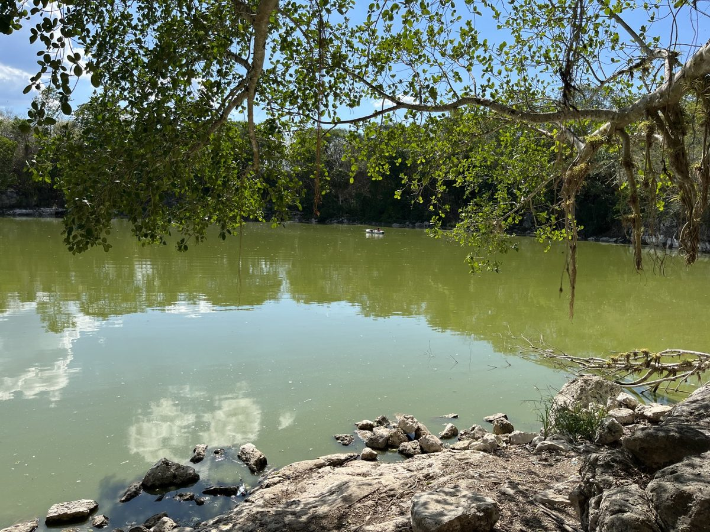

Fecal Stanols and Maya Population Trends
We are using concentrations of fecal biomarkers in lake sediments from the Yucatán to reconstruct population histories at Maya sites. This work is in conjunction with PIs from Auburn University and the University of Florida.